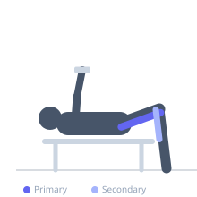
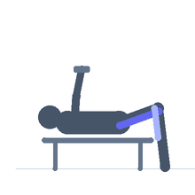

Exercise guide / Lying Dumbbell Leg Curl
Lying Dumbbell Leg Curl
The lying dumbbell leg curl is performed face-down on a bench or the floor, with a dumbbell clamped between the feet. The lifter curls the dumbbell upward by bending the knees, isolating the hamstrings. It requires no machine and provides a practical home-gym alternative to the lying leg curl machine. Foot stability and control of the dumbbell demand additional concentration.
Primary muscles
biceps femoris long head
biceps femoris short head
semitendinosus
semimembranosus
Secondary muscles
gastrocnemius medial
gastrocnemius lateral
Equipment
Dumbbell (Fixed)
Flat Bench


Starting position
- Lie face-down on a flat bench. Hold a dumbbell vertically between the soles of your feet, clamped firmly. Legs extended.
Setup
- Choose a dumbbell you can hold securely between your feet. Lie prone on the bench with hips at the edge and legs hanging off.
Steps
- Step 1: Squeeze the dumbbell securely between both feet.
- Step 2: Curl the dumbbell upward by bending the knees, bringing heels toward the glutes.
- Step 3: Curl as far as knee flexion allows — ideally past 90 degrees.
- Step 4: Lower the dumbbell slowly back to the starting position.
Coaching cues
- Squeeze the dumbbell
- Lead with the heels toward the glutes
- Hips stay on the bench
Breathing
- Exhale on the curl, inhale on the controlled lowering.
Range of motion
- Curl from full extension to as much flexion as possible.
Tempo
- 2-1-3-0 (slow eccentric)
Common mistakes
- Dumbbell slipping or rotating — use a secure grip with both feet
- Hips rising off the bench during the curl
- Using momentum to swing the dumbbell up
Safety
- Ensure the dumbbell is firmly secured before each rep
- Start light until foot clamping feels natural
Training
- hypertrophy: 10–15 reps
- endurance: 15–25 reps
- hypertrophy: 3–4 sets
- endurance: 2–3 sets
- Rest: {'hypertrophy': 75, 'endurance': 45}